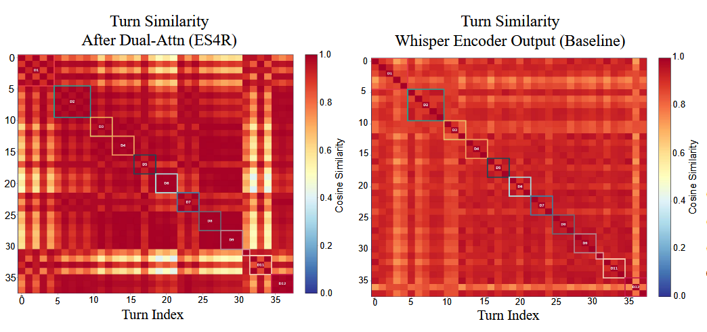
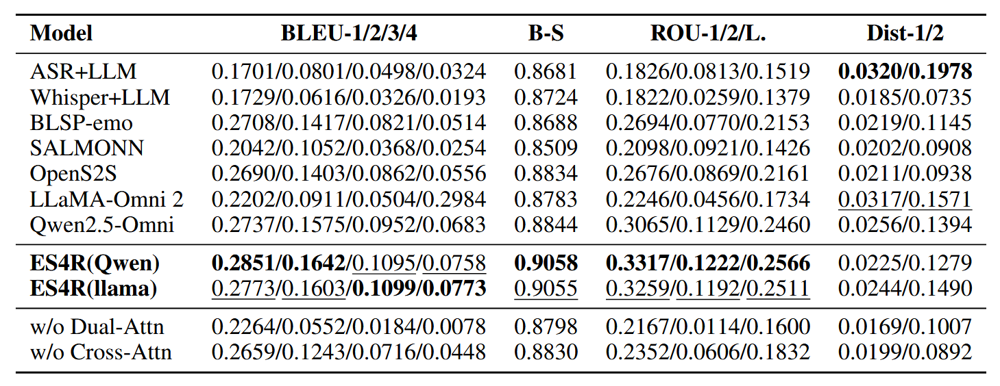
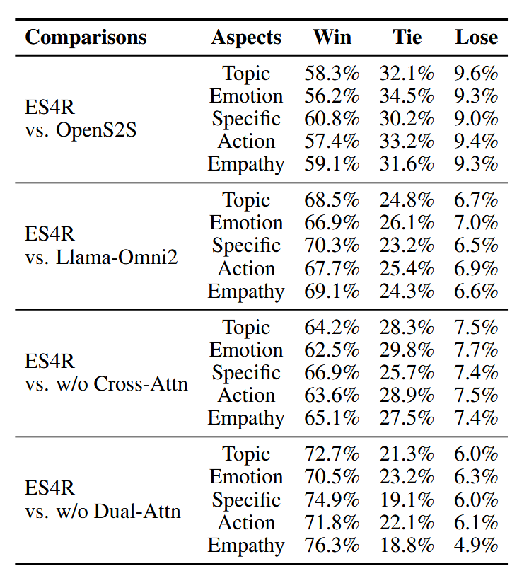
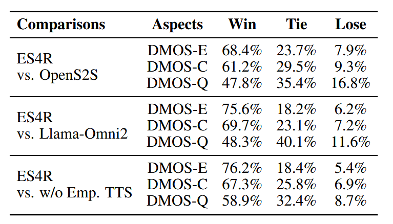
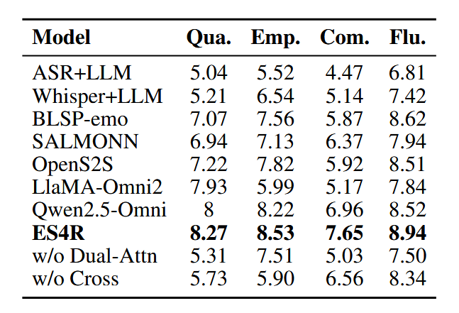

Abstract
Empathetic speech dialogue requires not only understanding linguistic content but also perceiving rich paralinguistic information such as prosody, tone, and emotional intensity for affective understandings. Existing speech-tospeech large language models either rely on ASR transcription or use encoders to extract latent representations, often weakening affective information and contextual coherence in multiturn dialogues. To address this, we propose ES4R, a framework for speech-based empathetic response generation. Our core innovation lies in explicitly modeling structured affective context before speech encoding, rather than relying on implicit learning by the encoder or explicit emotion supervision. Specifically, we introduce a dual-level attention mechanism to capture turn-level affective states and dialogue-level affective dynamics. The resulting affective representations are then integrated with textual semantics through speechguided cross-modal attention to generate empathetic responses. For speech output, we employ energy-based strategy selection and style fusion to achieve empathetic speech synthesis. ES4R consistently outperforms strong baselines in both automatic and human evaluations and remains robust across different Large Language Model (LLM) backbones.
Analyses

Representation analysis of turn-level cosine similarity. The left and middle heatmaps show that ES4R's Dual-Attn module produces clearer intra-dialogue structure compared to the uniform Whisper baseline. The right panel quantitatively shows that ES4R improves the dialogue cohesion ratio from 1.00× to 1.08×, validating the effectiveness of prepositive affective modeling.

Automatic evaluation results on the AvaMERG dataset. ES4R(Qwen) and ES4R(llama) achieve the best or second-best performance across BLEU, ROUGE, and BERTScore metrics compared to all baselines. Bold indicates the best performance and underline indicates the second-best performance. w/o Dual-Attn and w/o Cross-Attn denote ablation variants removing the dual-level attention module and speech-guided cross-modal fusion module, respectively.

Human evaluation results (A/B testing) on text responses comparing ES4R with baselines and ablation variants across five aspects: Topic Understanding, Emotion Recognition, Response Specificity, Actionable Advice, and Empathy Depth. ES4R achieves consistently higher Win rates across all dimensions and all comparisons.

Human evaluation results on dialogue-level speech responses using DMOS metrics. ES4R demonstrates superior performance in Empathy Expressiveness (DMOS-E) and Emotional Consistency (DMOS-C) compared to OpenS2S and LLaMA-Omni 2, while achieving competitive Speech Quality (DMOS-Q).
